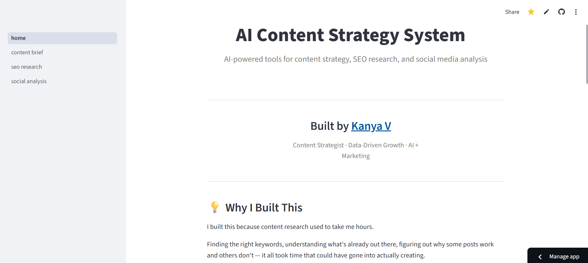
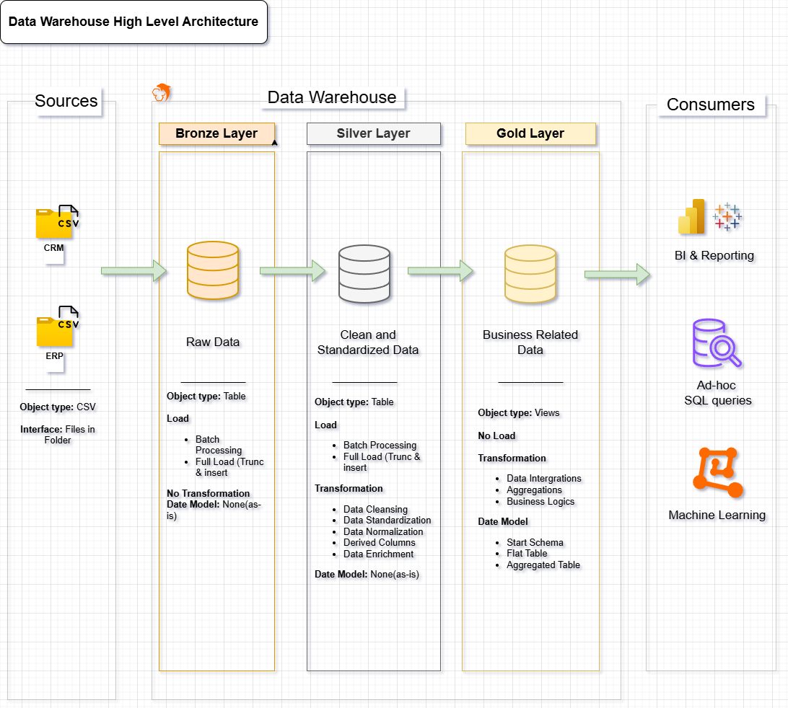

Case Studies & Analytics Projects
Data that tells a story.
Tools that make it useful.
I built these because I wanted to understand content at a deeper level — not just create it. Some are data projects. One is a live AI tool. All of them sit at the intersection of strategy and analytics.
How I drove 40% organic growth for a B2B cybersecurity brand — from zero
Built the entire content and digital presence from scratch — no followers, no SEO foundation, no system. Used keyword research, content audits, and weekly analytics to build a content engine that drove real, tracked results.

AI Content Strategy System — Live Web Application
Built and deployed a full-stack AI web app with three modules — Content Brief Generator, SEO Research Tool, and Social Media Performance Analyser. Designed around one belief: your thinking drives AI, not the other way around.

EU Loneliness Survey — Behavioral Audience Analytics
Analyzed 25,000 survey responses to engineer audience segmentation features — generation cohorts, income tiers, social media usage bands. Delivered an interactive Power BI dashboard translating complex behavioral data into clear audience narratives for non-technical stakeholders.

Chennai Metro Ridership — Trend & Narrative Analysis
Used SQL trend analysis on a 3-year government dataset to surface a complete behavioral shift from paper tickets to digital payments. Delivered a 2-page interactive report combining data analysis with editorial storytelling for a civic audience.

Content Audience Drop-Off Analysis Framework
Built a Python framework to identify where audiences disengage from content — analyzing session duration, scroll depth, and exit behavior. Recommendations improved average session duration and reduced bounce rates.

SQL Data Warehouse — Content & Customer Analytics
Architected a Bronze-Silver-Gold data pipeline across sales, customer, and product domains — built to support multi-dimensional reporting that informs both business strategy and content targeting decisions.